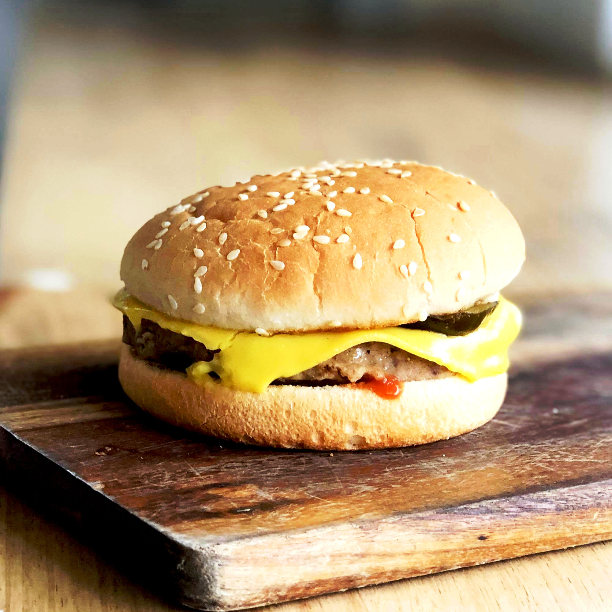

Savory Cheeseburgers

Description
Imagine sinking your teeth into a juicy, perfectly grilled cheeseburger.
The melty cheese oozes over the savory beef patty, complemented by fresh lettuce, ripe tomato, and a soft, toasted bun.
This classic cheeseburger recipe is a timeless favorite, perfect for a quick weeknight dinner or a weekend barbecue.
Simple to make and incredibly satisfying, it promises to be a hit with everyone at the table. Enjoy the delicious layers of flavor in every bite.
Ingredients (Serves 5)
- Ground Beef: 1.5 pounds of ground beef (preferably 80/20 for juiciness).
- Cheese: 5 slices of cheddar cheese (or your favorite cheese).
- Lettuce: 5 leaves of fresh lettuce.
- Tomato: 1 large tomato, sliced.
- Onion: 1 small onion, sliced (optional).
- Pickles: Sliced pickles (optional).
- Condiments: Ketchup, mustard, mayo (to taste).
- Seasoning: Salt and pepper.
- Buns: 5 hamburger buns.
Instructions
- Divide the ground beef into 5 equal portions.
- Shape each portion into a patty, about 1/2 inch thick.
- Season both sides of each patty with salt and pepper.
- Preheat a grill or skillet over medium-high heat.
- Cook the patties for about 4-5 minutes on each side, or until they reach your desired level of doneness.
- Place a slice of cheese on each patty during the last minute of cooking to melt.
- Lightly butter the insides of the hamburger buns.
- Toast the buns on the grill or in a skillet until golden brown.
- Place a lettuce leaf on the bottom half of each toasted bun.
- Add a cooked patty with melted cheese on top of the lettuce.
- Top with a slice of tomato, onion, and pickles if using.
- Spread your favorite condiments on the top half of the bun.
Your cheeseburger is ready to be devoured! Enjoy the classic flavors and satisfaction of a homemade burger.